Overview of Variables
In this project, two different type of loan (new loan and repeat laon) data for customer loan default analysis.
New loan data is prepared for customer loan default analyzing for new customers based on variables identified more relative to new customers.
Repeat Loan data is prepared for customer loan default analyzing for existing customers who have multiple loan history with the bank, the variables identified more relative to existing customers.
The tables below provided more details on each variables used in this project
Table 1: New Loan Variables
| Variable Name |
Description |
| Age at Loan | Customer age when the loan borrowed |
| Age at Loan 25th Pctile | 25th percentile of customer age at the loan borrowed vs age among all loans borrowed from the customer |
| Approval Duration Category | Approval Duration Category |
| Bank Account Type | Bank Account Type |
| Bank Account Type Recode | Recoded Bank Account Type |
| Bank Name | Bank Name of the loan borrowed by customers |
| Credit Rating | Customer Credit Rating |
| Education Level Risk Category | Risk Category of Education Level of the customer |
| Employment Status Risk Category | Risk Category of Employment Status of the customer |
| Term Days | Term days of the loan borrowed |
| Referral | Has referral when the loan was borrowed by customer |
Table 2: Repeat Loan Variables
| Variable Name |
Description |
| Avg Age at Loan | Average age among all loans borrowed from the customer |
| Bank Account Type | Bank Account Type |
| Bank Name | Bank Name of the loan borrowed by customers |
| Due Ontime Pctile | Percentage of all loans due one time |
| Employment Status | Employment Status |
| Term Days | Term days of the loan borrowed |
| Total Due Ontime | Total no. of loans due one time |
| Max Active Loans | Maximum no. of active loans borrowed by the customer |
| Max Age at Loan | Max age among all loan borrowed by the csutomer |
| Total no. of Loans | Total no. of Loans |
| Max approval Duration | The longest loan approval duration |

Univariate Analysis
This is the first part of the R-Shiny application where users can perform Exploratory Data Analysis on two different loan dataset, with the more common tools such as Distribution Analysis, Deviation Analysis and Scatterplot.
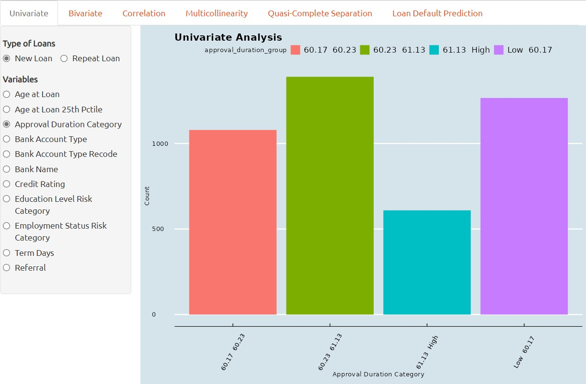
Univariate analysis is a statistical technique used to assess the symmetry and shape of single variable in a dataset. It involves examining the frequency distribution of a predictor variable to identify whether the data is normally distributed or skewed.
If a variable is found to be highly skewed, this can impact the accuracy and reliability of statistical models, and may require data transformation or specialized modeling techniques.
Bivariate Analysis
1. Bivariate analysis, if performed through box plots, is a graphical technique used to examine the relationship between a qualitative predictor variable and a continuous variable.
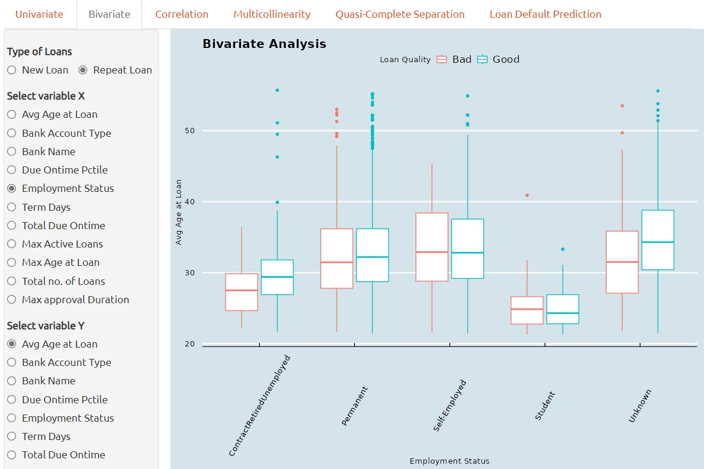
It provides a visual representation of the distribution of the continuous variable within each category of the predictor, and can reveal differences in variability or central tendency between groups.
2. If the bivariate analysis is performed through Scatterplot, it is then a graphical technique used to examine the relationship between two continuous variables.
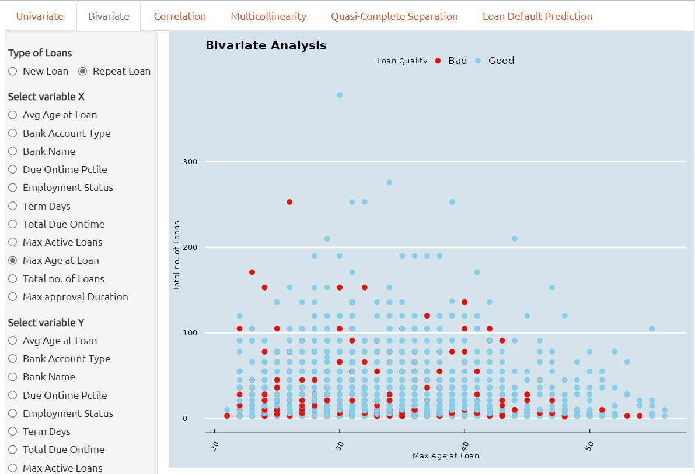
It provides a visual representation of the correlation two continuous variables between each other and can reveal correlation or clusters between two continuous variables. This can aid in identifying potential correlations between the two predictors and inform subsequent statistical analyses.
3. Lastly, if a bivariate analysis is performed through mosaic plot, then it is a graphical technique used to examine the relationship between two qualitative variables.
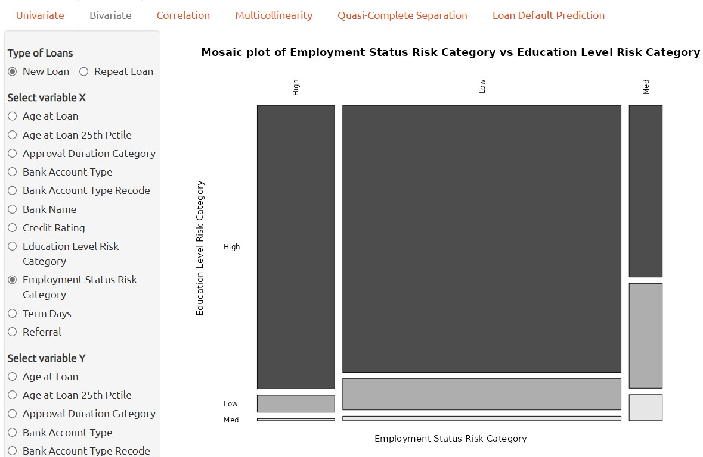
It provides a visual representation of the correlation two qualitative variables between each other and can reveal correlation or in between two continuous variables. This can aid in identifying potential relationships between the two predictors and inform subsequent statistical analyses.
Correlation Analysis
A correlation plot can be used to visualize the relationship between two continuous variables. In order to handle all of variables available, categorical variables have to be transformed into numerical variables accordingly before applying to correlation plot.
Each number on the plot represents the correlation coefficients between the pair of variables. The color density provides visualized view of strength of the correlation between the pair of variables.
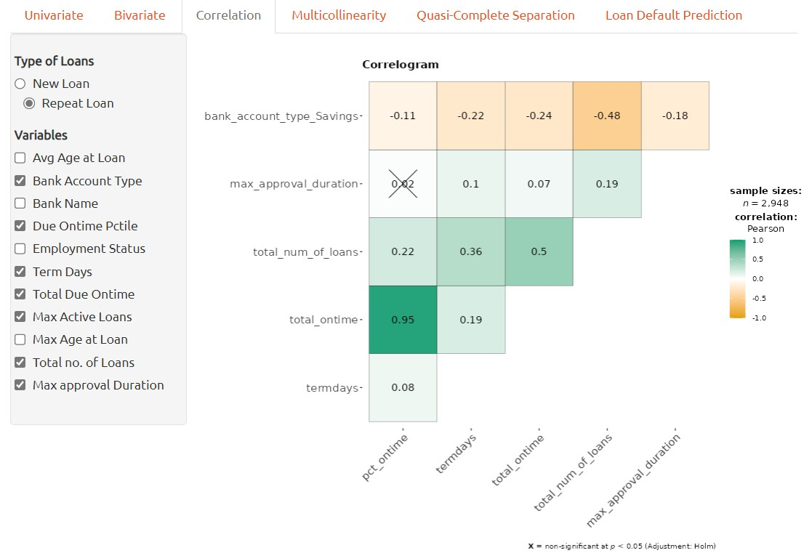
Correlation plot can aid in identifying potential associations between variables and provide insights into the nature of the relationship, which can inform subsequent analyses or hypotheses.
Multicollinearity Analysis
Multicollinearity refers to the situation in which two or more predictor variables in a machine learning model are highly correlated with each other, making it difficult to identify the independent effects of each variable on the dependent variable.
In a classification model, multicollinearity can lead to unstable and unreliable estimates of the coefficients and make it difficult to interpret the model’s results. It can also lead to overfitting and reduce the model’s predictive accuracy.
To address multicollinearity, one can exclude the highly correlated variables when building classification model. To determine whether multiple variables are in danger of compromising the model by this issue, we can utilize the variance inflation factor (VIF) analysis.
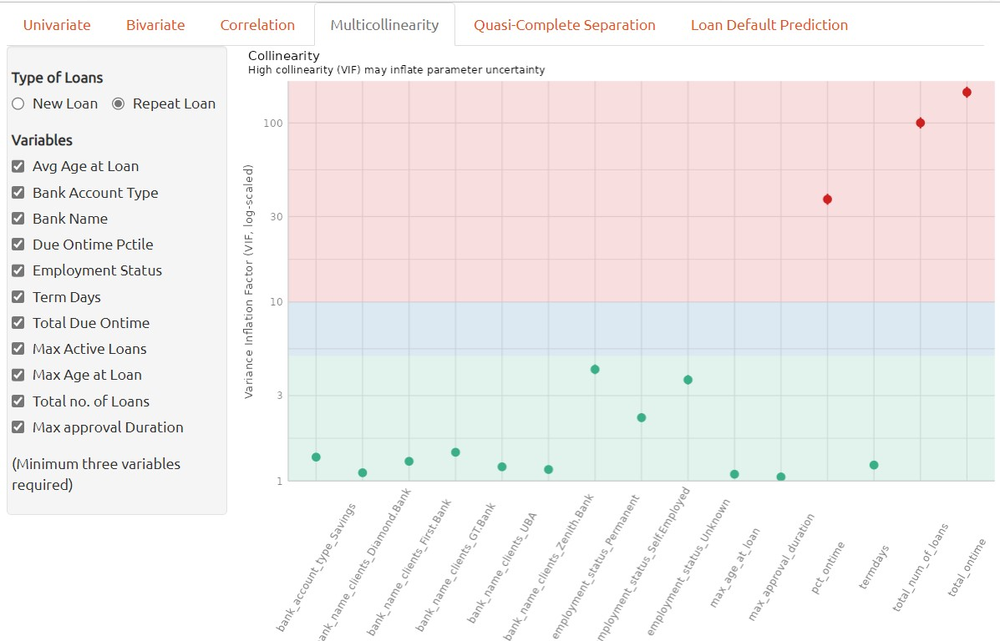
The variance inflation factor is a measure to analyze the magnitude of multicollinearity of model terms. A VIF less than 5 indicates a low correlation of that predictor with other predictors. A value between 5 and 10 indicates a moderate correlation, while VIF values larger than 10 are a sign for high, not tolerable correlation of model predictors (James et al. 2013).
In the context of multicollinearity, a high correlation coefficient between two predictor variables indicates a strong linearity relationship between them. This means that one variable can be predicted well by the other, and it becomes difficult to disentangle the effects of the two variables on the dependent variable. It’s important to note that correlation doesn’t imply causation, and that multicollinearity can also occur between three or more predictor variables, not just pairs.
Quasi-Complete Separation
Quasi-complete separation is a situation that can occur in classification when a predictor variable perfectly separates the outcome variable into distinct categories.
In other words, when a predictor variable has a perfect linear relationship with the outcome variable, the logistic regression model can perfectly predict which category the outcome variable belongs to based on the value of the predictor variable. This means that the estimated coefficient for the predictor variable becomes infinitely large.
For instance, the screenshot below provided that the current accunt holders having nearly zero Bad loans, so, it is necessary to collect more data for the Current account holders in terms of Bad Loan Quality data.
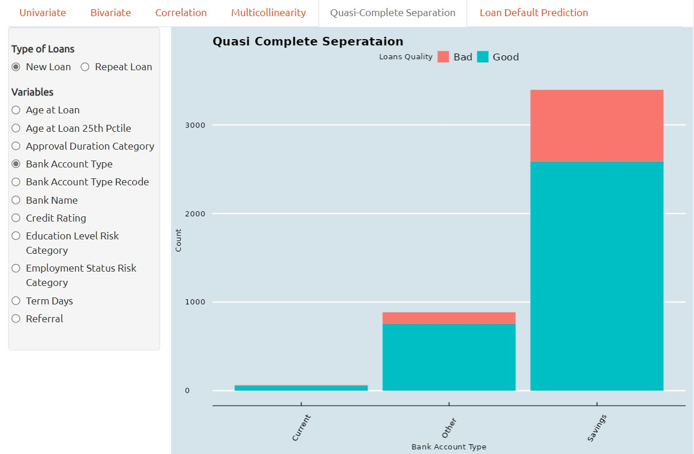
Quasi-complete separation is particularly problematic in small or moderate-sized datasets because it can lead to overfitting and unreliable coefficient estimates. In addition, the model’s performance can be sensitive to small changes in the data, which can make it difficult to interpret the results.
To address quasi-complete separation, there are several approaches that can be taken. One approach is to remove the problematic predictor variable or combine it with other variables to reduce its impact.
In some cases, quasi-complete separation may be a real phenomenon in the data and may require a different approach altogether. For example, if the data has a natural threshold or cutoff point, such as in medical diagnosis or credit scoring, the logistic regression model may need to be modified to account for this threshold. Overall, it’s important to be aware of quasi-complete separation and to use appropriate methods to address it when it occurs.
One method of visual analytics to determine whether a predictor variable has the problem of quasi complete separation is by barchart. Quasi-complete separation can be visualized using a barchart, which can help to identify the problematic predictor variable and understand its relationship with the outcome variable.
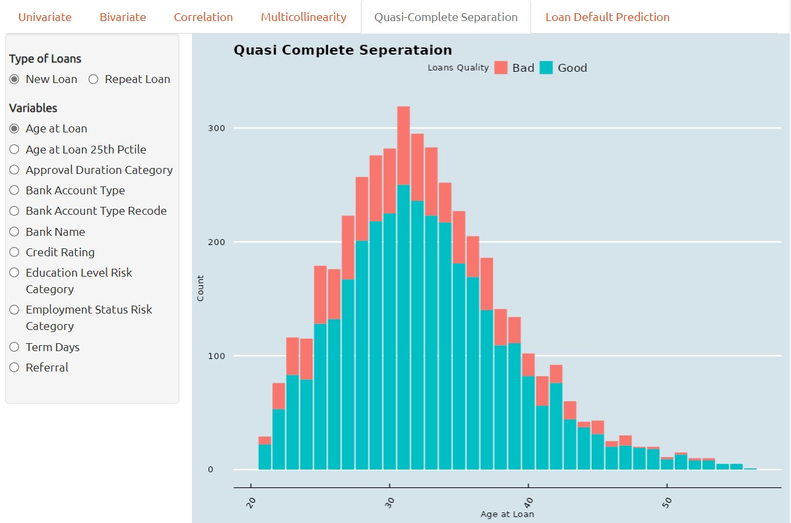
In a barchar, the predictor variable is plotted on the x-axis and the outcome variable is plotted and stacked on the y-axis. When there is quasi-complete separation, we typically see that the data points fall into two distinct groups or clusters, with no overlap between the two groups.
Loan Default Prediction
The predictive analysis of loan defualt prediction is using tidymodels framework, it is a collection of packages for modeling and machine learning using tidyverse. Following packages or functions are adopted in this customer loan default prediction project.
1. rsample is a package provide set of functions for drawing samples and creating resamples from data, for instance, initial_split function from rsample is adopted to create an initial split of new loan or repea loan dataset into training and testing dataset.
2. recipe is a package provides a framework of stream data pre-processing before data applied for modeling for training and validation. following recipe functions are used in this project.
| Function | Description |
|---|
| step_log | log transform data on numeric variables |
| step_naomit | removes rows if they contain NA or NaN values |
| step_novel | onverts all nominal or categorical variables to factors |
| step_dummy | converts all nominal variables into numeric variables |
| step_nzv | potentially remove variables highly sparse and unbalanced |
| step_zv | remove variables that contain only a single value |
| step_normalize | normalizes (center and scales) the numeric variables |
| step_corr | remove predictor variables that have large correlations with other variables |
| |
3. themis is a package provides set of functions to handling missing values in data. following methods from themis package for creating oversampling on data.
| Function | Description |
|---|
| step_upsample | replicate rows of a dataset to make variables with equal occurrences |
| step_smote | generate new examples using SMOTE algorithm |
| step_rose | generate new examples using ROSE algorithm |
The screenshot below shown that Oversampling function are provided to generate new examples for the inbalanced data with multicollinearity issues.
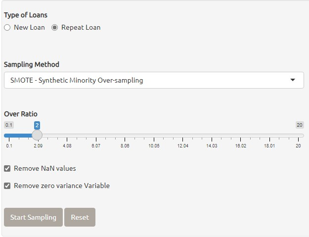
The screenshot below shown that extract examples are generated in the data for loan default prediction.
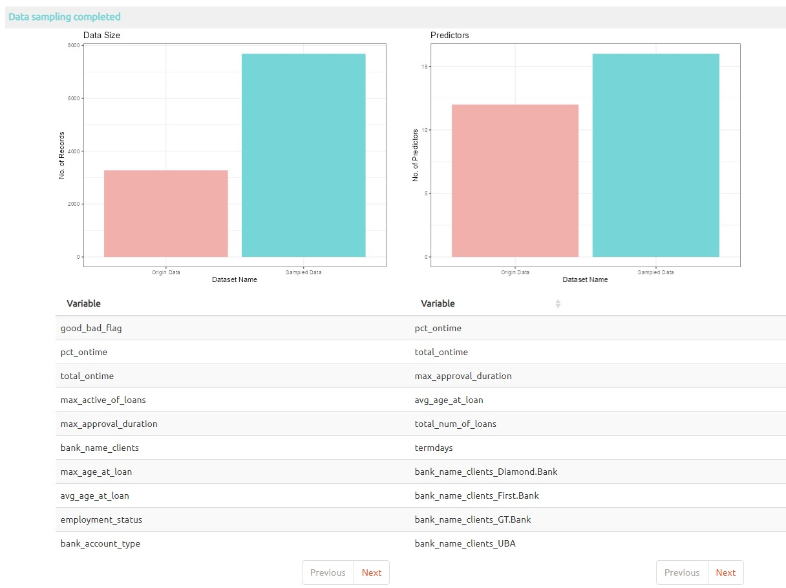
4. juice is a function of recipe to extract transformed training set estimated by prep, it return the results of a recipe where all steps are applied to the data.
5. vfold_cv known as V-Fold Cross-Validation (a.k.a k-fold cross-validation), it randomly splits the data into V groups of roughly equal size (called "folds"), the cross validatoin dataset is applied to resamples in model training.
The screenshot below shown that the first settings on Training/testing data splitting provided for adjust the size of training and testing dataset.
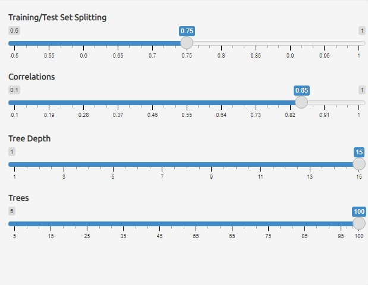
6. parsnip providing a tidy, unified interface for models that can be used to try a range of models without concerned the differences from different model packages. In this project three main machine learning models are applied for loan default prediction.
| Model | Description |
|---|
| rand_forest | It creates a large no. of decision trees, each independent of the others. |
| boost_tree | It creates a series of decision trees forming an ensemble. |
| logistic_reg | It's a generalized linear model for binary outcomes. |
The screenshot below shown that the three different models are provided for loan default prediction, the shiny application also allow mutliple models selected together for compare the best model for loan default prediction.
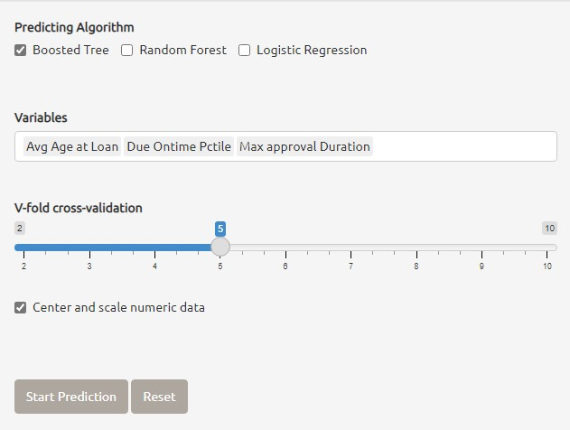
7. workflow bundle together pre-processing, cross validation, modeling and post-processing steps.
8. tune last_fit function from tune package is used to perform model testing by using test dataset, finally, collect_predictions from tune package is used to obtain and format results produced by tuning functions for visualization.
Below are the different results are extracted using tune package for loan default prediction results visualization.
8.1 Visualization of loan default prediction with one model selected
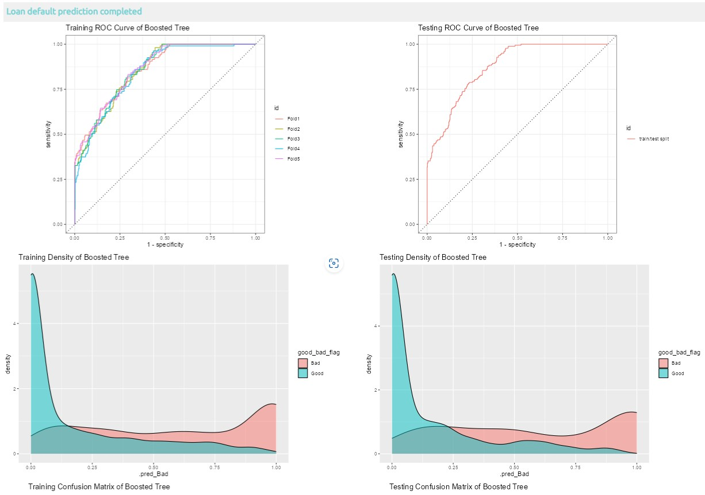
8.2 Visualization of loan default prediction with two models selected
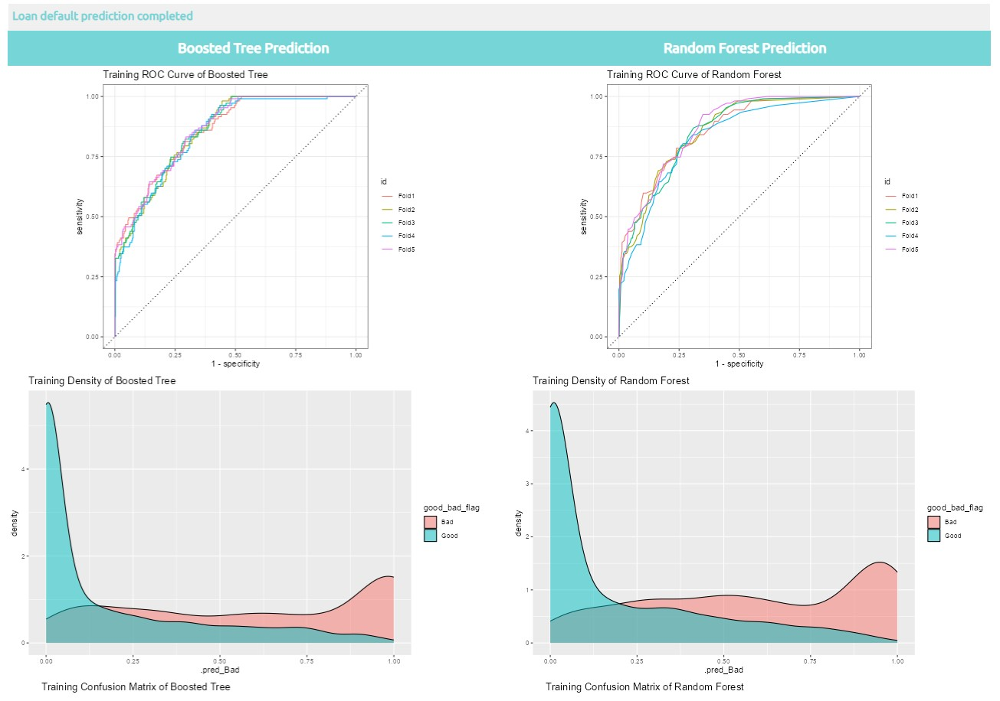
8.3 Visualization of loan default prediction with three models selected
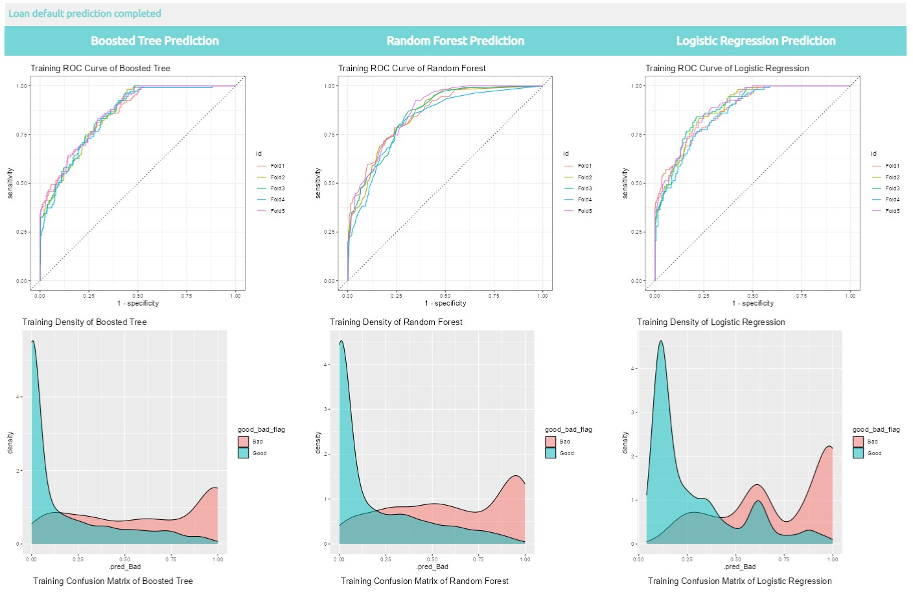
More information about Tidymodel, please click here.